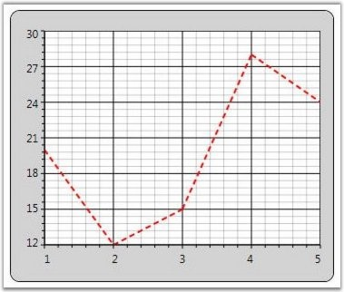

Chart for WPF enables you to apply custom Data Templates to the Chart Series. By applying the custom data templates, the Chart Series Segments can be altered. The following code example illustrates how to create a sample data template to draw a Line Chart.
|
[XAML]
<Window.Resources> <!--Chart Series Data--> <XmlDataProvider x:Key="myXmlData"> <x:XData> <Products xmlns=""> <Product Sales="20" Projected="30" Month="1"/> <Product Sales="12" Projected="28" Month="2"/> <Product Sales="15" Projected="29" Month="3"/> <Product Sales="28" Projected="33" Month="4"/> <Product Sales="24" Projected="30" Month="5"/> </Products> </x:XData> </XmlDataProvider> <!--Line Chart Template--> <DataTemplate x:Key="Template1"> <Line X1="{Binding X1}" X2="{Binding X2}" Y1="{Binding Y1}" Y2="{Binding Y2}" StrokeThickness="2" Stroke="{Binding Interior}" StrokeDashArray="3,2" /> </DataTemplate> </Window.Resources>
<sfchart:Chart> <sfchart:ChartArea Background="LightGray" GridBackground="White"> <sfchart:ChartSeries Template="{StaticResource Template1}" DataSource="{Binding Source={StaticResource myXmlData}, XPath=Products/Product}" BindingPathX="Month" BindingPathsY="Sales" Interior="Red" Type="Line"/> </sfchart:ChartArea> </sfchart:Chart> |

Figure 87: Custom Data Template applied to Chart Series
See Also